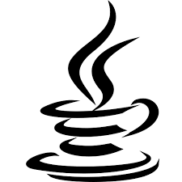

About Me
はじめまして、
秋田尚輝です。
はじめまして、秋田尚輝です。
大学3年時にゲームテスターのアルバイトをはじめた際に、パソコンを触り始め、プログラミングを始めました。趣味はソフトテニスとゲームです。ソフトテニスは中学から大学まで9年間取り組んでいました。ゲームは、マリオカートやポケットモンスターが好きです。
PROFILE

秋田 尚輝
2015.04 北海道立函館稜北高等学校 入学
2018.03 北海道立函館稜北高等学校 卒業
2018.04 札幌学院大学 法学部 法律学科 入学
2021.03 札幌学院大学 法学部 法律学科 卒業
Certification

2021.09 Oracle認定Javaプログラマ Silver SE 11
2022.04 Oracle認定Javaプログラマ Gold SE 11